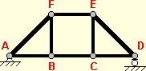
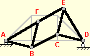

A truss is stable if all of its are interconnected as a rigid framework. Stability is usually achieved by ensuring that the truss is composed of interconnected triangles. For example, the simple truss below is composed of 6 and 9 members, which together form four interconnected triangles (ABF, BCF, CEF, and CDE).
If member CF is removed, however, the truss becomes unstable.

Without its diagonal member, the center panel of the truss now consists of a rectangle (BCEF) formed by four members, rather than two triangles (BCF and CEF). This configuration is unstable because there is nothing to prevent the rectangle BCEF from distorting into a parallelogram, as shown below:

The triangular arrangement of members ensures that the truss structure is a rigid framework.
To fix an unstable truss, look for any "panel" of the that is not a triangle, then add one or more members to transform that panel into a series of interconnected triangular shapes.
If you are having trouble creating a stable structural model, try loading a template and using it as a guide for drawing joints and members.
If an actual structure is unstable, it will collapse. If a structural model is unstable, the is mathematically impossible. (The computer will attempt to divide by zero.)
If your structural model is unstable, the Bridge Designer 2016 will detect and attempt to fix the instability during the Load Test. If the attempted fix is unsuccessful, BD 2016 will display a warning message, and you will have to return to the Drawing Board and modify your structural model to eliminate the instability.
Though most trusses are composed of interconnected triangles, it is possible to have one or more non-triangular panels in a stable truss. This is particularly true for complex truss configurations and for trusses with . In such cases, you probably won't be able to tell whether or not the truss is stable just by looking at it. The ultimate test for stability is to run the Load Test. If the Load Test runs without displaying the "your structural model is unstable" warning, then your truss is stable.